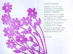

‘Ô bloem der steden’. Bilderdijk en Leiden
Samenstelling: Rick Honings en André Bouwman
14. Bilderdijk in teksten
| 14.1. ‘Aan een vriend bij de bevalling zijner egade’ | |
| Hou op, mijn goede vriend, hou op! | |
| Halt ein, cessez! piano! stop! | |
| Of ’k heb den brui van ’t verzenmaken. | |
| Dat houdt geen arme Dichter by, | |
| Al hieldt gy hem het rijmwoord vrij: | |
| Daar is een maat in alle zaken. | |
| Pas zong ik u een stouten knaap | |
| met d’ eersten wiegzang in den slaap, | |
| Of, eer men ’t jaartal rond kan tellen, | |
| Daar komt op nieuw een kleine meid, | |
| Die ook al om een versjen schreit, | |
| En ’k moet haar ook te vreden stellen. | |
| Dat schikt niet, vriendlief, dat gy ’t weet! | |
| Ik schei er uit als kraampoëet, | |
| Of ’t dient wat minder drok te loopen. | |
| Geloof niet dat ik met zoo’n hort | |
| De verzen uit mijn koker stort, | |
| Als gy uw borstrok los kunt knopen. | |
| Voor u is ’t wel. Gy neemt uw pret, | |
| En legt uw hoofd weêr neêr in ’t bed, | |
| En denkt om kraam noch kraamdichtmaken: | |
| maar ’t vrouwtjen zucht dan maanden rond, | |
| En trekt zoo menig zuren mond; | |
| En ik, ik moet een nacht aan ’t waken. | |
| 1812, fragment (Uit: Ik reikhals naar ’t graf) | |
| 14.2. ‘Eierkoken’ | |
| De luchtstroom ruisch’ door ’t vier, dat uit zijne asch geschoten, | |
| In vlammen om zich grijp’ en Meroos God doorgloei’; | |
| Zijn hitte dring’ door ’t vocht, in ’t hol metaal besloten, | |
| En bruische in golven op met bonzend stormgeloei. | |
| Daar wiegele in den plasch het scheppings-al van ’t kuiken, | |
| Dat in zijn zilvren lucht een gouden aardbol sluit; | |
| En ’t beuk’ de krijtaardschors dier breekbre wareldkruiken, | |
| En dove ’s levens aâm in ’t bobblend windvlies uit. | |
| Zoo word’ de ommuurde zee ten bergklomp door ’t verschroeien, | |
| waar ’t half gesmolten goud verbalsemd door blijft vloeien! | |
| 1818 (Uit: Ik reikhals naar ’t graf) | |
| 14.3. ‘’t nicotiaansche kruid’ | |
| Weg met dat stinkend stof! weg met die vuile dampen, | |
| De lucht en ’t heldre licht van tafeltoorts en lampen | |
| Verduistrend, d’ademtocht verstikkend, en vergift | |
| voor borst en ingewand! Wat razerny van drift | |
| Kon zoo het menschenras van zelfbesef berooven, | |
| Om dus zich ’t leven in den boezem uit te doven? | |
| En, Hemel, alles is aan deze dolheid vast, | |
| En gaat op priklingstank en walgingrook te gast! | |
| Euroop, wat zijt ge dwaas! – Van waar toch dit gelusten | |
| Naar ’t onkruid, naar ’t vergif van Oost- en westerkusten? | |
| Is ’t wonder, daar ge alom en ziekte en gift vergaârt, | |
| Dat lichaamsplaag aan plaag ’t verzwakt gestel bezwaart? | |
| 1827 fragment (Uit: Ik reikhals naar ’t graf) | |
| 14.4. ‘Leyden in verwoesting’ | |
| Genadig God! wat ijslijk kraken! – | |
| Wat loeien borst daar door de lucht! – | |
| Verzwolg dan de afgrond muur en daken? – | |
| Waar zijn we, waar? En waar gevlucht? – | |
| Gevlucht – ! Helaas! En wat gevloden? – | |
| Ontwaken hier de ontslapen dooden, | |
| En slaat ons ’t vreeslijk uur der wraak? – | |
| Ja, ’t aardrijk beeft – ô God, genade! – | |
| Mijn kind, omarm my! gy, mijn Gade! | |
| ’t is Jezus rechtstoel, hy genaak! | |
| Maar neen, wat dampen! ô mijne oogen, | |
| Neen, de afgrond spuwt den hemel aan. | |
| Zie ’t al van sulferrook betogen, | |
| Neen, ’t is geen jongst, geen Aardvergaan! | |
| Maar gy, waar zijt gy, dierbaar Leyden? – | |
| Wat zie ik om my? vlakten? heiden? | |
| Uw’ luister in den grond getrapt? | |
| Wat Helgeest, aan zijn’ boei ontsloten, | |
| Wiens voet uw muren omgestoten, | |
| wiens vuist uw’ naam heeft uitgeschrapt? | |
| Gerechte God! wat schrikvertooning! – | |
| Bestelpt; verplet! verstikt in ’t bloed! | |
| Vergruisd in de omgestorte woning; | |
| En brandende in hun haardsteêgloed! | |
| Onredbren! – hoofd en borst gespleten – ! | |
| Ach! zwangren ’t lichaam opgereten, | |
| En vruchtjens in den schoot vernield! – | |
| Juich, Alva, ja! dit ’s harteweelde! | |
| zoo dit geens Alvaas boezem streelde, | |
| De ziel waar met het lijft ontzield | |
| 1808, fragmenten (Uit : Ik reikhals naar ’t graf) | |
| 14.5. Bilderdijk over zijn verhuizing van Leiden naar Haarlem | |
| Doch, altijd my zoo dierbre wallen, | |
| Geleerdheids zetel, Hollands roem! | |
| Gy zaagt mijn ouderdom vervallen, | |
| Maar ook mijns levens eerste bloem. […] | |
| En thands! op ’t einde van mijn dagen | |
| Moet dit mijn uitgemergeld rif | |
| Een handvol lijkzand af gaan vragen | |
| Aan ’t vreemde Kenn’merlander klif. […] | |
| 1827 (uit ‘Afscheid aan Leyden’) | |
| 14.6. De Haarlemmer Vincent Loosjes over Bilderdijks verhuizing | |
| Keer, keer naar Leydens dierbre wallen | |
| Waar, toen ge er waart, geen schijn van roem | |
| Op restte, die in stof vervallen | |
| Schaars koesterden geleerdheids bloem. […] | |
| Laat eindigen uw gramme dagen, | |
| Uw van den nijd doorvreten rif | |
| Waar ’t wil, een weidschen grafkuil vragen. | |
| Maar niet aan ’t Kenmerlandsche klif; […] | |
| 1827 (uit ‘Haarlems weêrklank van Bilderdijk’s Afscheid aan Leyden’) | |
| 14.7. Uit een liefdesbrief aan Wilhemina Katherina Schweickhard | |
| O feelingless, insensible heart! From half past 7 till 9 o’clock I walked round your house, and my sighs did not reach your ears, my sorrows did not ascend to your heart! Calm and quiet in your room, you did not perceive, who was wandering in the most violent agitation, under the same window, whose glimpse announced your being inclosed there. O how stared my eyes at that light! how I envyed the little fly, who perhaps that time was burning himself in the candleflame, I considered with so much affection. Ah, the poor gnat died at least in your sight, at the shine of your adored eyes, whilst I agonise out of your view, unconforted by any tender look of those bright luminaries. [...] | |
| Londen, 19 december 1796 (Uit: Mr. W. Bilderdijk’s briefwisseling 1795-1797) | |
| 14.8. Brief aan de huisbaas | |
| Hoog welgeboren Heer! Daar ik my nooit met geldzaken bemoeid heb, noch meen te bemoeien, weet ik niets van huurpenningen of lasten of wat dergelijke is. Ik verschoon voor het overige, volgens uw verzoek, uwe vrijpostigheid, als van een onbekende jegens een onbekende, schoon het – inderdaad – dezelve wat verre gedreven is, iemand in zijne studiën met zoodanige kleinigheden te storen. Ik teeken mij dus, met alle betamelijke hoogachting, |
|
| Hoogwelgeb. Heer, Uw Dw. Dienaar, W. Bilderdijk |
|
| juli 1821 | |
| 14.9. Jan van Walré over Bilderdijk | |
| Wanneer ik bij hem zat, heb ik menigmaal gedacht, hoe is het mogelijk dat zulk een man zoo veel vijanden heeft, hij was de verdraagzaamste, de zachtste, de beminnelijkste, de beleefdste man, dien ik gekend heb. Ik voor mij zou durven beweren dat het overmatig gebruik van opium, waaraan hij zich gewend had, dikwijls veel heeft toegebracht tot het caustique van zijn stijl. Ik heb hem, niet éens, maar meermalen in een soort van delirium gezien, dat ik aan niets anders toeschreef. Hij verbeeldde zich dan, in den omtrek der Groote Kerk, waar zijn huis op uitzag, lichten, schimmen, en allerlei wonderlijkheden te zien. | |
|
|
1835 (uit het dagboek van Nicolaas Beets) |
| 14.10. Willem de Clercq over Goethe en Bilderdijk | |
| Om de overblijfsels van den eersten vereenigde zich alles, wat menschelijke lof en eere geven kan; klokgebrom en paradebed, ja zelfs eene plaats in den grafkelder der vorsten, viel hem ten deel, terwijl om de nederige lijkbaar van Bilderdijk zich alleen eenige vrienden geschaard hadden, die meer nog den door Gods genade in Christus geregtvaardigden zondaar, dan den vereeuwigden dichter, indachtig wenschten te zijn. Beide met groote gaven uitgerust, is hun lot verschillend geweest. De een had den geest der eeuw, waarin hij leefde, als een bekwaam schilder op het paneel overgebragt, en drukte zijne eigene individualiteit slechts in zoo verre uit, als met de poëtische omkleeding overeenkwam; de andere was gedurig in den strijd tegen de hoofdstrekking dezer eeuw ingewikkeld, en door weinigen erkend, oogstte hij slechts den haat en de afkeuring van de meeste zijner tijdgenooten in. | |
| 1833 (Uit: Gedenkzuil voor W. Bilderdijk) | |
| 14.11. Nicolaas Beets over Bilderdijk en Johannes van der Palm | |
|
Van der Palm bedaard, gematigd, zacht, gelijkmoedig, voorzichtig, byna tot achterhoudendheid toe; Bilderdijk hartstochtelijk, in uitersten, krachtig, grillig, moedig, en meestal overmoedig. Van der Palm bescheiden, de menschen liefhebbende en ontziende, niet altijd zonder het vermoeden van menschenvrees; Bilderdijk trotsch, stellig en met een somberen menschenhaat worstelende. Van der Palm plooizaam, somtijds aan zwakheid grenzende; Bilderdijk standvastig, niet zonder hoofdigheid. In het wetenschappelijke, van der Palm onderzoekende, Bilderdijk ontdekkende; van der Palm toepassende, Bilderdijk bespiegelende; van der Palm nauwgezet en geregeld, Bilderdijk ongedurig, alles tegelijk aanvattende, en wonderspreukig; van der Palm het oude vernieuwende; Bilderdijk hier het nieuwe bejagende, daar het oude ongewijzigd opdringende; van der Palm voor zijne meening pleitende; Bilderdijk strijdende voor de zijne. Voeg daarby nu het onderscheid van staatsparty en het verschil in lotsbeschikking. Van der Palm met gezondheid, voorspoed, huiselijk heil gezegend; bemind, geëerd, gevleid, zonder iemands tegenspraak van trap tot trap opklimmende; Bilderdijk ziekelijk, ongelukkig in zijn echt, in zijn kroost, van alle kanten gekweld, miskend, behoeftig, door teleurstelling op teleurstelling gegriefd |
|
| 1842 (Uit: Leven en karakter van Johannes van der Palm) | |
| 14.12. Een dichter op het Rapenburg | |
| O Bilderdijk, zo dwars, zo ontevreden, in Leiden heeft u nog het liefst gewoond. Uw eerste dichtwerk zag u hier bekroond, privaatdocent in eigenzinnigheden. |
|
| Verbannen wegens trouw aan uw verleden, verguisd, beschimpt, bespot en weggehoond, door volgelingen met hun vlijt beloond, heeft u de geest der eeuw steeds scherp bestreden. |
|
| Soms lijkt het of hij nog door Leiden gaat, al strompelend, met stok en horrelvoet, en steunend op zijn zoon en toeverlaat. |
|
| Dan trekt hij weer ten strijde tegen ’t
kwaad, met kniebroek, staatsierok, driekante hoed, gekwelde bard van tegenspoed en haat. |
|
| Peter van Zonneveld, uitgesproken 7 september 2006. | |
|  |
| vorige pagina | |